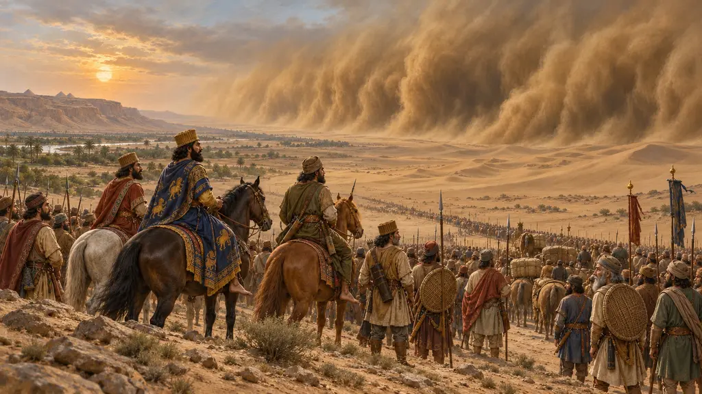
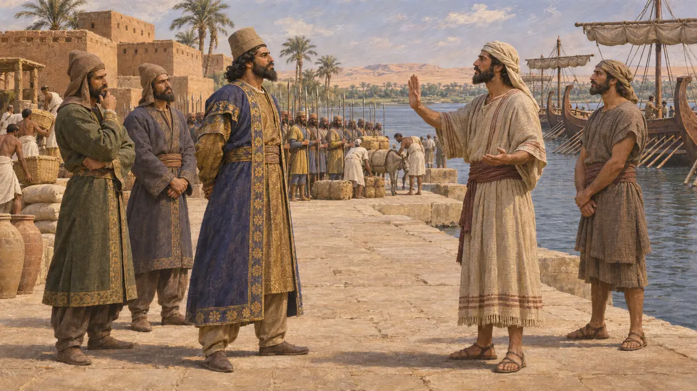
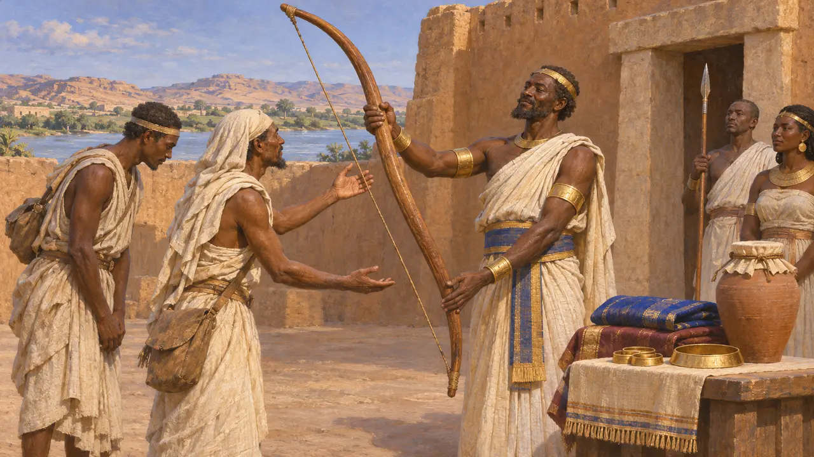
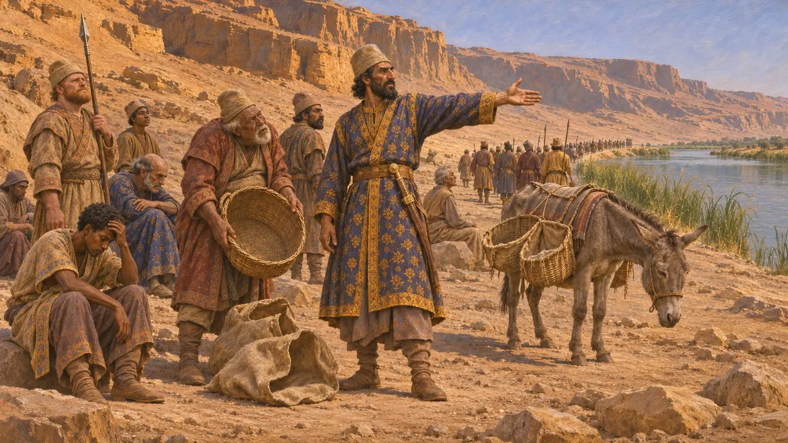
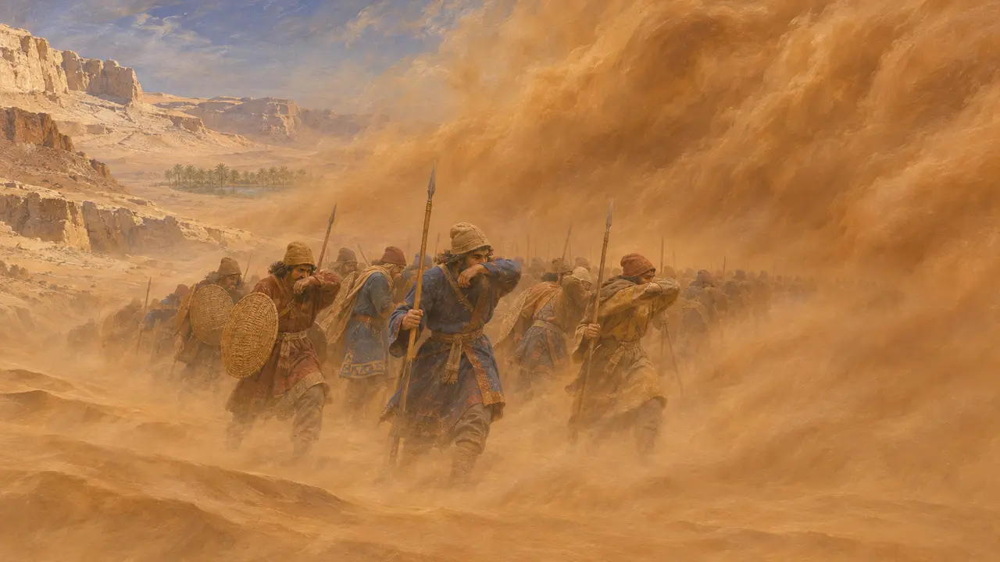
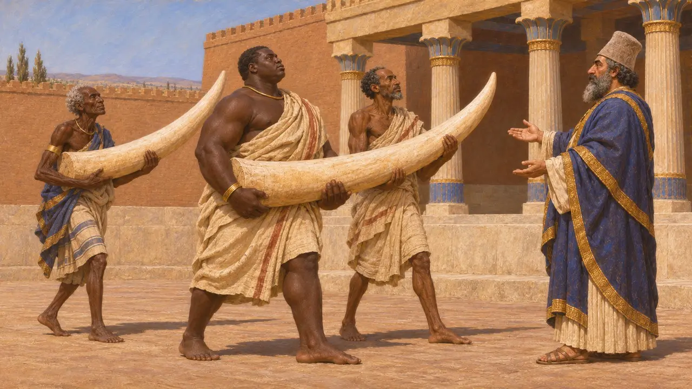

攻占埃及之后,冈比西斯试图将波斯的势力向西推进到沙漠中,直抵锡瓦的阿蒙神谕所,又向南沿尼罗河上溯进入库什,希腊人称之为埃塞俄比亚。希罗多德把这两次远征都讲成国王暴怒招致的灾难。波斯方面的记录则表明,南征并非彻底失败,因为库什后来出现在国王的属地之列。
游戏中： 游戏依据希罗多德:据说阿蒙大军被沙暴掩埋,饥饿使南进的行军就此中止。游戏略去了他自己提到的一点:有些埃塞俄比亚人曾被征服;而公元前524年这个年份是现代的推算。

征服之后的三个计划
古代记述希罗多德说,埃及到手之后,冈比西斯计划发动3场远征:攻打迦太基,攻打西部沙漠的阿蒙人,以及攻打南方海滨长寿的埃塞俄比亚人。腓尼基舰队拒绝出海攻打自己的殖民地迦太基,这一计划因此作罢。另外两场则照常进行。希罗多德没有给出年份,史家通常把它们定在公元前524年前后。
Herodotus 3.17-19

间谍与埃塞俄比亚王的弓
后世传说希罗多德讲述了冈比西斯如何派遣来自象岛的食鱼族人带着礼物充当间谍。埃塞俄比亚国王识破了他们,嘲笑那些礼物,并送回一张巨大的弓,说波斯人只有在能像他的子民一样轻松拉开这样的弓时才可前来。这个故事具有道德寓言的形态,讲的是贪婪的征服者与睿智而遥远的民族,其中还有人活到120岁、太阳之桌等奇异之事。
Herodotus 3.18-24

沿尼罗河南进
古代记述据希罗多德记载,国王盛怒之下出发,没有携带粮草。行程尚未走完五分之一,补给就耗尽了,士兵先吃驮畜,随后据他所说,又抽签每十人吃掉一人,于是冈比西斯折返底比斯和孟斐斯。然而希罗多德在别处又说,冈比西斯在这次行军中征服了与埃及相邻的埃塞俄比亚人,他们此后每隔一年便进献黄金、乌木和象牙作为礼物。
Herodotus 3.25; Herodotus 3.97

西部沙漠中失踪的大军
争夺中希罗多德说,约有5万人从底比斯出发,要奴役阿蒙人并焚毁他们的神谕所,这一数字很可能有所夸大。他们到达一座名叫绿洲的城镇后便消失了;他承认沙暴的说法出自阿蒙人之口。现代有人声称找到了他们的遗骸,但都未经证实。O. Kaper 则主张,达赫拉绿洲有铭文可证的一位埃及叛王佩图巴斯提斯四世击败了这支军队,而沙暴的故事掩盖了这场损失。
Herodotus 3.25-26; O. Kaper, Petubastis IV in the Dakhla Oasis, 2015

波斯记载中的库什
见于史载大流士的铭文把库什列入国王治下的各地之中,他的苏萨建筑特许状还说宫殿所用的象牙来自库什。波斯波利斯的浮雕刻画了库什的献礼者。这些都表明,至少到大流士在位时,库什北部已被视为处于帝国势力范围之内,不过究竟是冈比西斯还是大流士最先控制了该地,仅凭现存记载无法断定。
DNa; DSf; P. Briant, From Cyrus to Alexander, 2002
来源
- Herodotus 3.17-26
- Herodotus 3.97
- DNa
- DSf
- P. Briant, From Cyrus to Alexander, 2002
- O. Kaper, Petubastis IV in the Dakhla Oasis, 2015